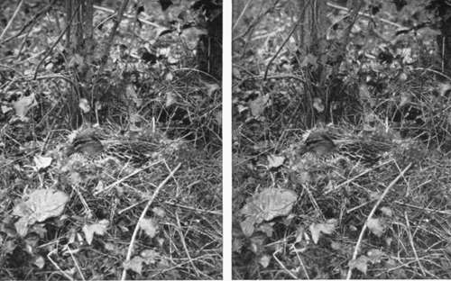
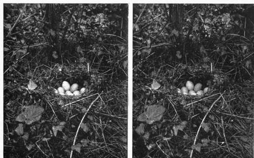
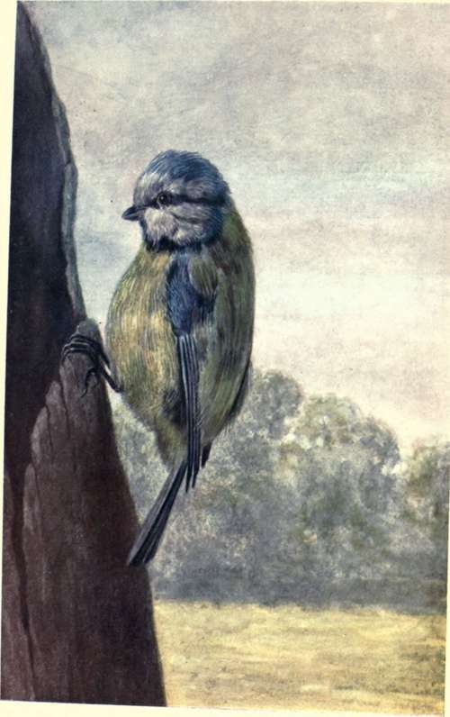

Chapter X. How To Observe And Photograph Some Of Our Commoner Birds And Their Nests And Eggs. Part 11
Description
This section is from the book "Nature Photography For Beginners", by E. J. Bedford. Also available from Amazon: Nature Photography for Beginners.
Chapter X. How To Observe And Photograph Some Of Our Commoner Birds And Their Nests And Eggs. Part 11
What a nice day again. We are fortunate in the weather for our weekly excursions. I was glad to hear from your letter that you were successful last week in finding several nests, and I will tell you when we are in the train what I think the three fresh ones were you found and which you were not quite certain about.
To-day we are again bound for the same locality as before, because I think it is better to work one or two districts week by week than to try a fresh place every time. During the season many new nests will be discovered on the same route by going over the ground at intervals of, say, a week. You will find also, after some experience, that birds get attached to a district and will often nest in or near the same spot for many seasons in succession. I remember in my early days finding a Sedge Warbler's nest in the same little clump of herbage year by year. After an interval of about twelve years, during which time I had been absent from the district, I was going over the ground again and had the curiosity to look, as before, for the Sedge Warbler's nest. Sure enough, there it was, whether built by the same birds, I cannot say; if not, probably by their descendants. So that when one gets accustomed to a district it is possible almost to count on finding certain nests, and I don't mind telling you now that is one reason why I have been able to find so many for you where we have been working.
Now we are comfortably seated in the train, let me see if I can remember the list of your finds last week. There were nine, I think, altogether: two Song Thrushes, one with eggs and one with young birds; one Blackbird with young; one Robin; two Hedge Sparrows; and the three you were doubtful about. The one you found in the furze bush, which looked something like a Hedge Sparrow's, but had a wool lining and which contained five greenish-white eggs with brown spots on them, belonged to the Common Linnet. The other higher up in the hedge, which you could not reach to photograph, and which was something like a Chaffinch's, but larger and much more untidy looking, with eggs similar to the last but rather larger, was no doubt the nest of a Greenfinch or Green Linnet, as it is sometimes called, a bird very common in most districts. The third one, built in the side of the haystack rather low down and containing five whitish eggs with light bluish-grey markings, sounds like the description of a Pied Wagtail's nest. As you obtained a photograph of it I dare say I can tell you from that; if not, we will go and see the nest another day.
I am glad to hear you have brought eighteen plates with you again to-day, as the nesting season is now in full swing. We are at the end of the second week in May, and in addition to our resident birds, the migrants which annually visit us have all arrived, with perhaps one or two exceptions, and will soon have nests and eggs. As I was prevented from accompanying you last week I came over two days ago in order to find a few subjects for you to-day, so that we could save time. I shall, therefore, be able to take you round without having to spend a good deal of time in hunting for the nests. A good way to discover the whereabouts of many nests is to sit down in a likely spot, remaining perfectly still and quiet. Under such circumstances, you will soon have many birds, and probably some of the smaller mammals, round you, and by the aid of your glasses, which you should always carry, you will be able to follow many birds to the locality of their nests, and a careful search will do the rest.
Fig. 6. Wild Duck on Nest.
Fig. 7. Wild Duck's Nest.
The best way to carry the glasses is to sling them round the neck with the focus set for a moderate distance, so that they are ready for immediate use when required; otherwise, by the time you have got them out of their case and focussed, the opportunity of using them, or perhaps I should say the object you desired to look at, has disappeared from view. I have made a note of the subjects for to-day; they comprise the following nests, which are mentioned in the order we shall come to them: Blue Tit, Tree Creeper, Starling, Yellow Hammer, Willow Warbler, Golden-crested Wren, Skylark, Bullfinch, Wild Duck, and Partridge. Ten subjects in all.
Blue Tit going to Nest.
We start at the farm, and before we leave the house I want to draw your attention to the House Sparrows' nests in the tall hedge just close to the back door. You will notice they are domed nests not unlike that of a Wren, and are much more neatly made than when built in a gutter of the house or in a hole in the thatched roof of a shed. As they are built rather high up we will not attempt to photograph them to-day, but make for the nest of the Blue Tit. This is in the post of the gate leading into the yard, and you will have to take my word for it, as you will not be able to see either the nest or eggs. I have seen the bird go in and out several times lately, and I know the nest is now finished and the hen bird has commenced to sit. You will be able to obtain a photograph of the post showing the entrance hole to the nest, and you can call it the site of a Blue Tit's nest. Listen while I put my stick into the hole. You can hear the little bird hissing like a snake, and she is no doubt puffing out her feathers and making herself look double her usual size, and even then she will not be very big; but she makes up for her small size by her large amount of courage, and will stick to her nest in the most determined manner. She will attack one's finger put near the nest, and on this account has received the nickname of " Billy-biter." As you cannot see the eggs, I must tell you they are small white ones with a few light red spots upon them. The nest is composed of a large amount of material, including moss, hairs, and feathers, and a numerous little family occupies it, sometimes as many as sixteen eggs having been found, although from seven to ten is the more usual number. The eggs of the Blue Tit, Tree Creeper, Willow Wren, and one or two other members of the Tit family, are so much alike that, unless they can be identified with the bird and nest to which they belong, it is almost impossible to tell them with certainty.
The Tree Creeper's nest is quite close. It is built between two boards forming a part of the fence round the yard. It is situated just at the corner here, by the shed, and again you will have to be content with the external appearance. It is difficult to imagine how a family of from six to nine young ones can be accommodated in such an apparently small space, notwithstanding the fact that the Creeper is one of our smallest birds. The bird itself is not often seen, unless we are specially on the look-out for it, as it is of a sombre hue, and in running up the surface of a tree trunk or wall, generally selects the side away from the observer. It will often be seen when the observer is sitting down in a likely spot, as I mentioned just now.
You are getting so proficient in manipulating the camera and accessories now that I prefer to leave you to arrange it yourself and calculate the necessary exposure. But here I am if you require any assistance.
Continue to:
- prev: Birds And Their Nests And Eggs. Part 10
- Table of Contents
- next: Birds And Their Nests And Eggs. Part 12
Tags
nature, photography, art, birds, camera